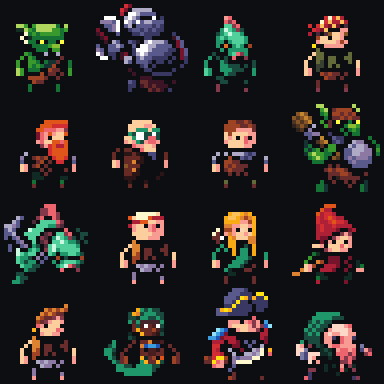
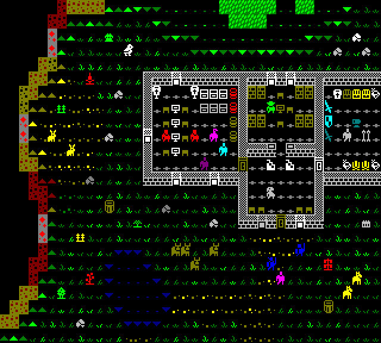

Designing the art work for Mythical Whalers has been a slow and meticulous ordeal, pretty much all the art in the game has been through many iterations.
During initial prototypes of tilesets I noticed how jarring the borders were between the square tiles. The transitions had a very square abrupt transitions which I wasn't a fan of. I remembered been playing around with dwarf fortress gemset tileset.
